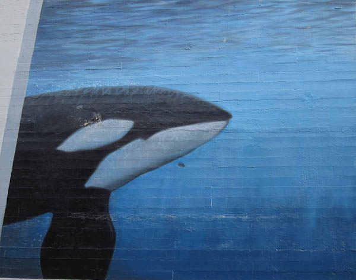
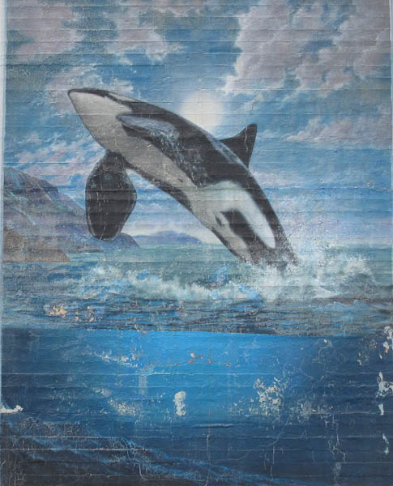

As the sun started to set on Pike Place Market, I thought the setting sun would be a good backdrop to seeing Leap of Faith, Wyland’s first mural using warm colors. As a bonus we could also see Orcas off the San Juan Islands on the opposite side of the same building which depicts the J-1 pod Wyland visited with during his stay in Seattle.
The hotel was easy to find but unfortunately there were no murals. In talking to the hotel manager she indicated that the paintings were destroyed in construction required to fix leaks in the walls. They were just painted over 6 month ago so we barely missed them. Had we known we would have come sooner.
While touring Seattle we did see that, while there are no Wylands in Seattle, another artist is painting whales and we saw these 2 walls there.

